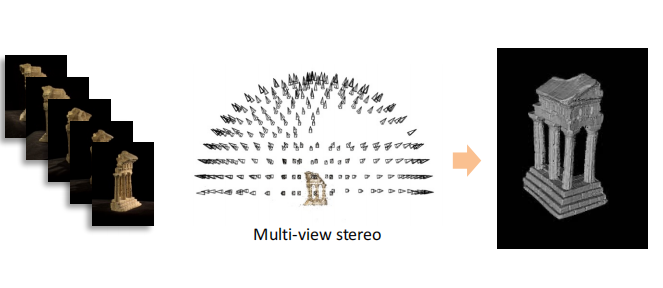
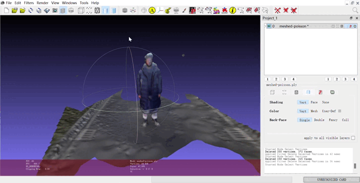

<!DOCTYPE html>
<html lang="en">
  <head>
    <meta charset="utf-8" />
    <meta name="viewport" content="width=device-width, initial-scale=1.0, maximum-scale=1.0, user-scalable=no" />

    <title>基于多视角图片的三维重建</title>
    <link rel="shortcut icon" href="./favicon.ico" />
    <link rel="stylesheet" href="./dist/reset.css" />
    <link rel="stylesheet" href="./dist/reveal.css" />
    <link rel="stylesheet" href="./dist/theme/simple.css" id="theme" />
    <link rel="stylesheet" href="./css/highlight/github.css" />

    <link rel="stylesheet" href="./_assets/custom.css" />

  </head>
  <body>
    <div class="reveal">
      <div class="slides"><section  data-markdown><script type="text/template">

<div class="middle center">
<div style="width: 100%">

# 基于多视角图片的三维重建

<hr/>

By Hanxuan Li

</div>
</div>

</script></section><section ><section data-markdown><script type="text/template">

<div class="middle center">
<div style="width: 100%">

# Part 1.Multi-View Stereo


</div>
</div>

</script></section><section data-markdown><script type="text/template">

## 算法原理
<div class="mul-cols">
<div class='col'>

- 基于多视角图片进行立体匹配，计算深度图。(PatchMatch算法)
  - Initialization
  - Propagation
  - Search
- 从深度图得到三维网格。
  - Poisson Reconstruction
  - Marching Cubes
- 纹理映射。
</div>




</script></section><section data-markdown><script type="text/template">

## 实现——COLMAP

```
$ colmap feature_extractor --database_path $DATASET_PATH/database.db --image_pat $DATASET_PATH/images

$ colmap exhaustive_matcher --database_path $DATASET_PATH/database.db

$ mkdir $DATASET_PATH/sparse

$ colmap mapper --database_path $DATASET_PATH/database.db --image_path $DATASET_PATH/images --output_path $DATASET_PATH/sparse

$ mkdir $DATASET_PATH/dense

$ colmap image_undistorter --image_path $DATASET_PATH/images --input_path $DATASET_PATH/sparse/0 --output_path $DATASET_PATH/dense --output_type COLMAP --max_image_size 2000

$ colmap patch_match_stereo --workspace_path $DATASET_PATH/dense --workspace_format COLMAP --PatchMatchStereo.geom_consistency true

$ colmap stereo_fusion --workspace_path $DATASET_PATH/dense --workspace_format COLMAP --input_type geometric --output_path $DATASET_PATH/dense/fused.ply

$ colmap poisson_mesher --input_path $DATASET_PATH/dense/fused.ply --output_path $DATASET_PATH/dense/meshed-poisson.ply
```

</script></section><section data-markdown><script type="text/template">

## 实验结果

- 总体效果符合预期，是COLMAP的正常水平。
- 耗时久。

<div align=center>

</div>

- 总体轮廓清楚，衣服纹理清晰
- 无法重建面部
</script></section><section data-markdown><script type="text/template">
## Summary of MVS

- 存在的问题
  - 光度一致性原理有时候并不满足
  - 对几何结构的依赖

</script></section><section data-markdown><script type="text/template">

## Example

<div class="three-line">

|表头 a|表头 b|表头 c|
|:--:|:--:|:--:|
|这是一个|一些内容|...|
|三线表|...|...|

</div>

|表头 a|表头 b|表头 c|
|:--:|:--:|:--:|
|这是一个|一些内容|...|
|普通表格|...|...|

</script></section></section><section ><section data-markdown><script type="text/template">

<div class="middle center">
<div style="width: 100%">

# Part 2. 基于神经表示的重建方案

</div>
</div>

</script></section><section data-markdown><script type="text/template">

## NeuS

<div class="mul-cols">
<div class="col">

第一列

- list
- list

</div>

<div class="col">

第二列

```python
class MyClass:
    def __init__(self, ...):
        ...
    def method(self, ...):
        ...
```

</div>
</div>

<div class="mul-cols">
<div class="col">

第一列

- list
- list

</div>

<div class="col">

第二列

1. list 
2. list 
    - list

</div>

<div class="col">

第三列

```python
class MyClass:
    def __init__(self, ...):
        ...
    def method(self, ...):
        ...
```

</div>
</div>

</script></section><section data-markdown><script type="text/template">

## Neuralangelo

</script></section><section data-markdown><script type="text/template">


## LoD-NeuS

</script></section></section></div>
    </div>

    <script src="./dist/reveal.js"></script>

    <script src="./plugin/markdown/markdown.js"></script>
    <script src="./plugin/highlight/highlight.js"></script>
    <script src="./plugin/zoom/zoom.js"></script>
    <script src="./plugin/notes/notes.js"></script>
    <script src="./plugin/math/math.js"></script>
    <script>
      function extend() {
        var target = {};
        for (var i = 0; i < arguments.length; i++) {
          var source = arguments[i];
          for (var key in source) {
            if (source.hasOwnProperty(key)) {
              target[key] = source[key];
            }
          }
        }
        return target;
      }

      // default options to init reveal.js
      var defaultOptions = {
        controls: true,
        progress: true,
        history: true,
        center: true,
        transition: 'default', // none/fade/slide/convex/concave/zoom
        slideNumber: true,
        plugins: [
          RevealMarkdown,
          RevealHighlight,
          RevealZoom,
          RevealNotes,
          RevealMath
        ]
      };

      // options from URL query string
      var queryOptions = Reveal().getQueryHash() || {};

      var options = extend(defaultOptions, {"transition":"slide","transitionSpeed":"fast","center":false,"slideNumber":"c/t","width":1000}, queryOptions);
    </script>


    <script>
      Reveal.initialize(options);
    </script>
  </body>
</html>
